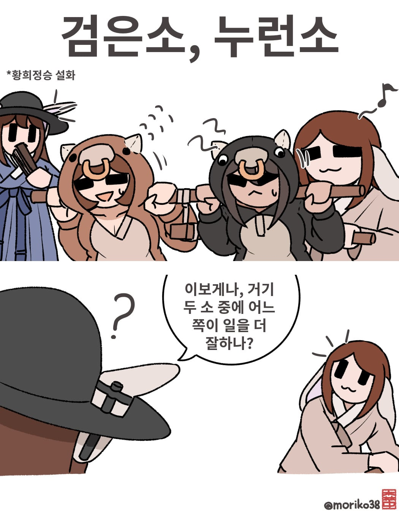
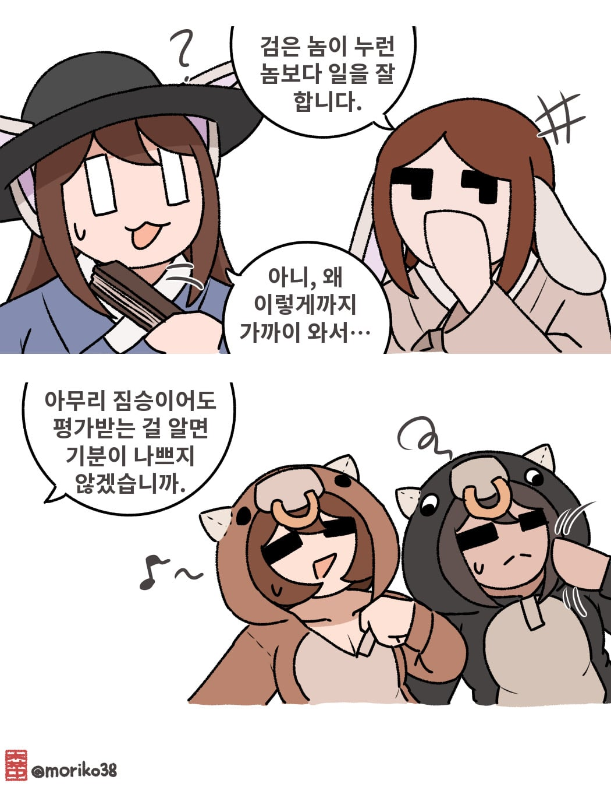
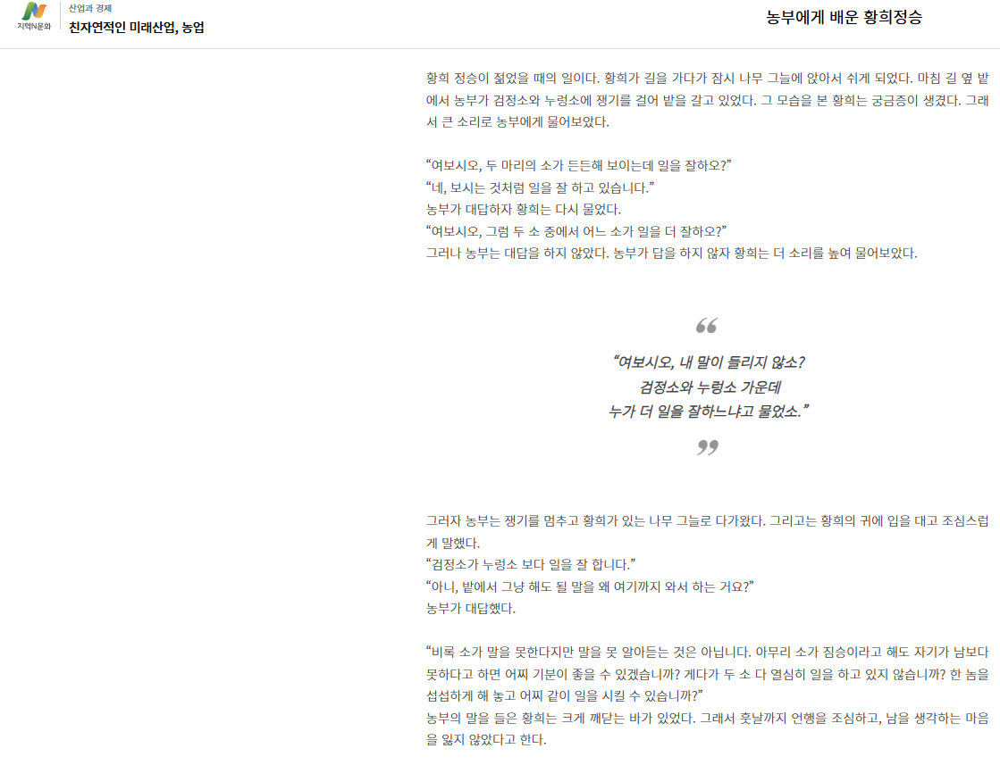

황희정승관련 유명한 설화



황희정승관련 유명한 설화

소 젖탱이 보소
와 누런소 찌찌
밤일은 내가 더 잘 하오 농부의 농밀한 혀가 선비의 귓볼을 핥았다
옷 좀 더 땡겨봐 가슴 보일정도로

나는 누렁소로 하겠소
황희가 길을 가다 농부에게 물었다
"황소와 검은소중 어느소가 일을 더 잘하오?"
그러자 농부가 황희 옆에 와 귓속말로 뇌까리길
"낮일은 황소가 잘하고... 밤일은 내가 잘하오."
황희가 그제서야 아차 싶어 튀려 하는데, 농부가 우악스런 손으로 황희의 팔을 낚아채는 게 아닌가?
멀리선 보이지 않던 팔의 심줄이 황희의 팔을 나무뿌리 마냥 얽어맸다.
"그럼, 보여드리겄소!"
푹짝푹짝 틴틴틴!
황희의 등이 활처럼 휘었다...
라고 하기엔 황희는 여러가지 개인스캔들로 세종에게 약점을 잡혀 퇴직을 못하고 평생 일만 했다
검은소 후드 눈깔 졸귀ㅋㅋ
드디어 4컷으로 확장이라니 환영
하지만 일은 황희가 제일 오래 하는걸~
이러고 농부가 가면을 벗으니 세종대왕이…
누렁소 가슴 으흐흐
"그걸 묻는 당신은 노동자간의 불화를 조장하려는 자본주의의 첩자가 아닌가?"
농부는 사내를 숙청하고 다시 일을 시작했다.
소들은 아무것도 보지 못했다.
유 뻐킹 레이시스트
내 경험 상 진짜 말알 알아들어서 그렇다는거임 ㅋㅋ
개나 소나 사람 말 다 알아들음
과장이 아니고 이 개새끼들 내 말 다 알아듣는다고
안듣는 척인거지
하지만 누런놈이 가슴은 더 큽니다요
이 설화때문에 황희정승이 존나 인자한 사람인줄 알았는데ㅋㅋ 하긴 젤 오래살아남은 정치인이 선인일리가 없지
어흐